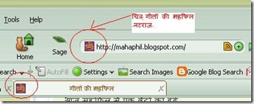
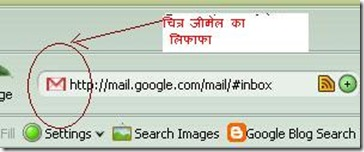
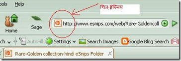

Add an Icon or your Photo next to a websites URL in the address bar
अपने चिट्ठे का फेविकोन बनायें
सबसे पहले इन तीन चित्रों को ध्यान से देखें, पहले चित्र में मेरी गीतों की महफिल के एड्रेस बार का चित्र है, इसमें महफिल के पते के पहले नटराज का छोटा सा चित्र बना है, दूसरे चित्र में जीमेल का लिफाफा है और तीसरे चित्र में ईस्निप का प्रतीक चिन्ह बना हुआ है। इसे फेविकोन (Favicon) कहते हैं..



मैं बहुत दिनों से सोच रहा था कि क्यों ना अपने चिट्ठे के पते के आगे भी इस तरह का प्रतीक चिन्ह लगाया जाये। बहुत दिनों की मेहनत और अमित गुप्ता जी का कई बार दिमाग खाने के बाद इसका पता चला, लेकिन यह भी कुछ लम्बा प्रोसेसिंग था।
इसमें सबसे पहले एक 16x16 का चित्र बना कर .ico फोरमेट में सेव करने के बाद किसी होस्ट पर सेव कर वहाँ से लिंक लेना और कोड बना कर अप्ने चिट्ठे में जोड़ना बहुत लम्बा और मुझ जैसे अल्प अंग्रेजी ज्ञानी के लिये बहुत ही टेढ़ी खीर साबित हुआ। मुझे लगा कि जब मैं इतने दिनों से इन HTML कोड के साथ प्रयोग कर रहा हूँ फिर भी मुझसे नहीं हुआ तो एक नये चिट्ठाकार के लिये तो यह कितना मुश्किल होगा।
आखिरकार इतने दिनों की मेहनत रंग लाई और मुझे बहुत ही आसान तरीका मिल गया, जिसमें एकदम नया और अनाड़ी ब्लॉगर भी अपने आप अपने फोटो या किसी चिन्ह को अपने चिट्ठे के पते के आगे जोड़ सकता है।
Day 2
कल फेविकोन पर पोस्ट लिखते ही कुछ ही देर में तो जीतू भाई और पर्यानाद जी ने अपनी टिप्पणीयों में फेविकोन बनाने के अलग अलग तरीके सुझा दिये, और उन तरीकों के आधार पर ज्ञानजी ने आनन फानन में अपने चिट्ठे पर "ज्ञ" लिख भी दिया।
मुझे लगता है कि मैं जो तरीका यहाँ बता रहा हूँ वह सबसे आसान है-
चलिये शुरु करते हैं
सबसे पहले माई फावतार पर जाकर लोगिन कर लें, संभव हो तो यूजर आई डी अंग्रेजी में और छोटा रखें
अब अपने पसंदीदा फोटो को यहाँ (फावतार पर) अपलोड कर दें और वापस आ जायें।
अब नीचे दिये कोड को कॉपी कर लें।
कोड में जहाँ NAHAR लिखा हुआ है उसे हटा कर अपना यूजर आई डी लिख दें।
<head>
<link href='http://favatar.myfavatar.com/NAHAR.png' rel='icon' type='image/png'/>
<link href='http://favatar.myfavatar.com/NAHAR.ico' rel='shortcut icon' type='image/x-icon'/>
</head>
अब ब्लॉगर के डेशबोर्ड में जाकर Edit HTML में उपर से कुछ लाईनें छोड़कर देखिये <head> शब्द लिखा दिखेगा
head शब्द के नीचे आपके यूजर आईडी वाला कोड पेस्ट कर दें
प्रीव्यू देख लें, एड्रेस बार में आपका पसंदीदा चित्र दिखने लगा है, अब Save करें।
अब आराम से साम्यवादी विचारधारा वाले मित्र हंसिया हथौड़ा या लाल झंडा , हिन्दूत्व विचारधारा वाले केसरिया झंडा और ज्ञानदत्तजी रेल का इंजिन अपने चिट्ठे में जोड़ सकते हैं। :)
बस और फटाफट नया चिट्ठा लिख कर सबको जानकारी दें :)
यह लेख यहाँ भी उपलब्ध है।